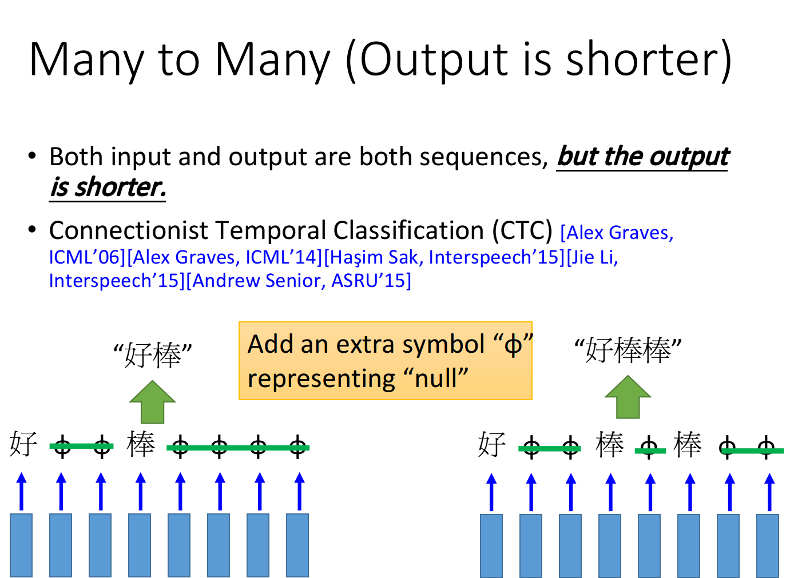
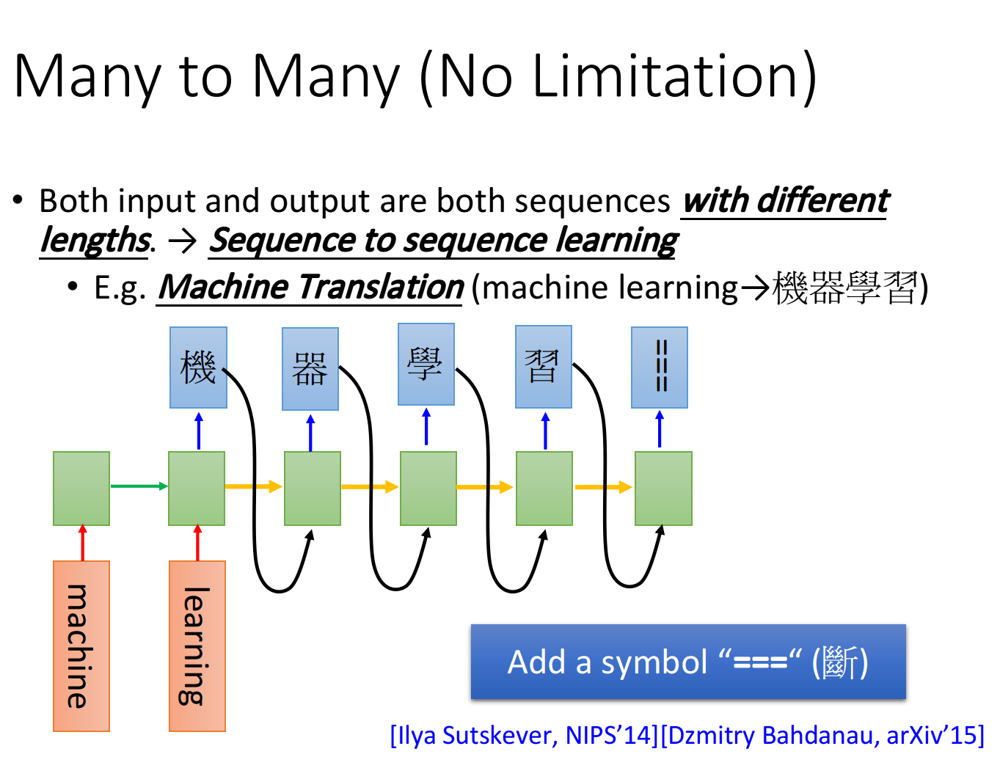
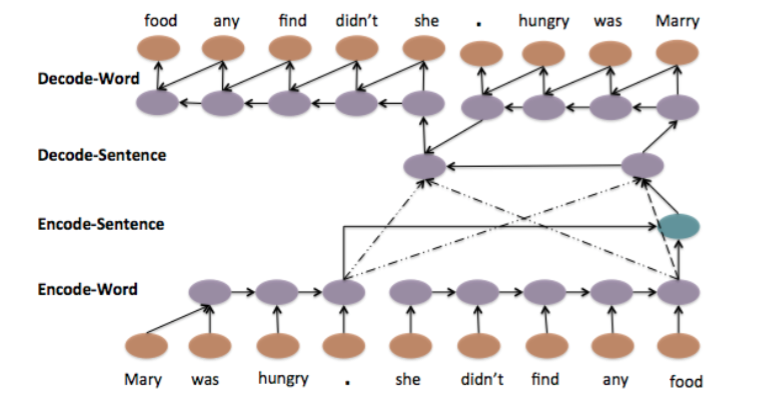
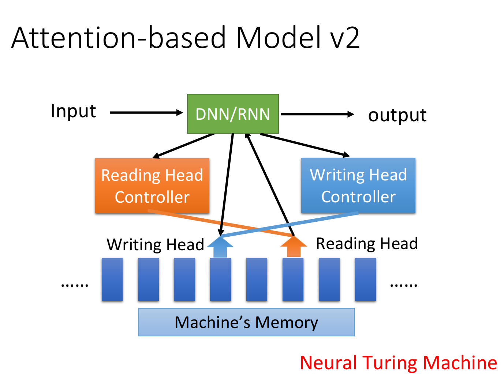

之前我们也稍稍学过了RNN一般用到的神经元LSTM，如果将他向CNN那样用，很容易能弄出一个与之前学过的神经网络相似的具有记忆力的vec2vec的网络。
可是，经常再需要用到这种具有记忆能力的神经网络时，它通常输入和输出大小并不是像我们之前用CNN处理图像时那么统一。假如仅仅只是一张张独立的图片，我们可以把他弄成相同大小的vector，比如说按照RGB、YUV、灰度或者是其它方式来输入，把他弄成128*128或者是128*128*3那样相等的vec。又由于之前用于图像分类时，每张图片都具有独立性，因此可以忽略顺序乱序输入。
但遇到在像NLP问题那样，比如翻译，输入输出格式并不统一。毕竟不可能把每一句话都弄成10个字节，输出也是10个字节那样子。这种输入输出大小不统一，并且输入之间又具有顺序关联的关系的训练方式就叫做seq2seq的方式。
CTC的中止符号
CTC虽然不是Seq2seq的，但对seq2seq的理解也有着挺重要的意义。CTC算法是一个语音识别的算法，它的运作过程主要是先将语音的输入切分成若干小片段，然后再对每段语音分别进行识别。但是，语音的切分有可能是在两个字中间。

比如识别到一个序列红红红，我们输出应该只有一个红，因为后面两个都只是它的重音而已。但，这个序列有可能真的是红红红或者红红啊，这是不可能的。因为假如是分割为两个字，当语音分割恰当时，应该会有一个中止符号隔开。比如涂$山山$红$红那样，两个红之间会有一个分隔符，而没有分隔符的两个相同的音节就被视为同一个。这种利用中止符号识别的方式也给seq2seq不少启发。
Auto-encoder
Auto-encoder是seq2seq这种方式的一个应用，我们从这个应用入手来知晓seq2seq的做法。
如果我们利用了RNN的方式，在一个神经元内能对以前的状态也进行运算的方式，我们就可以把我们的文字信息按顺序输入到每一层的RNN里面。以前我们学习的CNN里，数据都是按照层次有输入一直向输出层传递，而在RNN里面则存在的同层之间的数据传递。

比如这是一个例子，将machine learning输入到网络后，我们只需要训练出一个包含这个短语足够信息的vec。然后以这个vec为一个种子作为输入，每次都以相同的逻辑运作，让网络输出机器学习四个字。当然，如果让他一直输出，有可能会输出像机器学习近平地方老师兄...一直停不下来，这时我们用CTC相似的方法，加个终止符就可以了。这就是seq2seq learning的基本方式，当然这是怎么train的也许在敲完一大段代码时才能学会。
语言是考虑顺序的，那怎么样提取出这个句子的关键信息，形成一个描述这句话文字信息的vec就是auto-encoder解决的问题。

auto-encoder通过让一句话输入，然后将这句话输入encoder生成一个种子vec，然后再用这个vec输入到decoder里，期望它能按照反向的顺序生成一句相同的话。那么这个种子vec就包含了这句话里和顺序有关的文字信息。当然，还可以构建一个更高维度的网络，让他每遇到一个句号都生成一次，这样提取到的信息会更多。
它的应用就懒得讲了，什么语音直接翻译的那些都能这样弄。它做到的就是把一个顺序信息提取出来形成一个定长的vec而已，之后想用DNN那些什么的，随便怎么来都行。
Attention-based Model
其实我个人理解attention就是给神经网络增加了更庞大的数据库而已，在DNN/RNN的一些输出里面，由显式的数据变成数据的索引而已。

比如我们让一台机器做考验英语阅读，我们也是采取先读文章再读题的方式，读文章时可能将某些数据存储在不同的地方。就比如将描述爱丽丝的信息和描述亚丝娜的信息分别存储。在读问题读到关于爱丽丝的问题时，就去找和爱丽丝有关的东西，什么金桂、骑士、辫子、盔甲都是她的一些可能的信息。
我个人是觉得这样更符合DL中deep的思想吧，在神经元存储数量有限时扩展更加模块化的存储，即使提高遗忘的程度也能训练的更好，也就是能用1650的卡为什么要买2080那样。